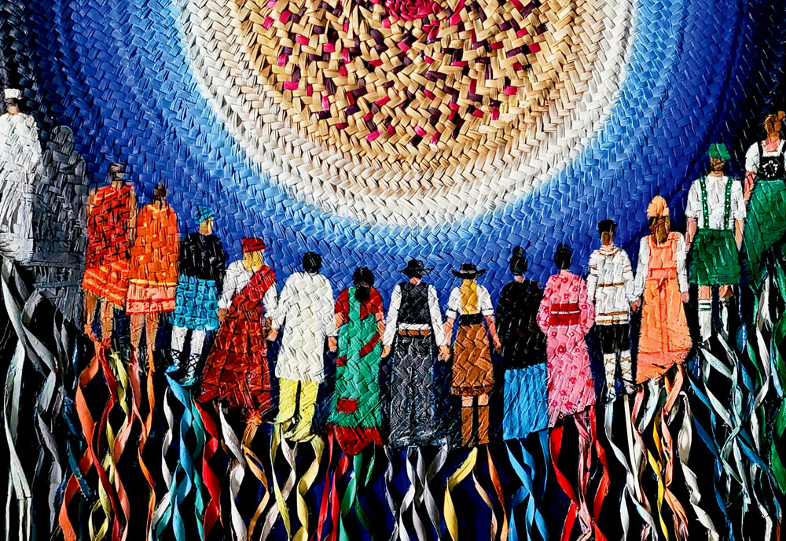

Globalization as ideas spreading from one place to another, usually from the West to the rest of the world has always been a popular opinion since thats what we see in media. However, Pieterse paints a very different picture. Instead of globalization moving in one direction, he compares it to a braid where different cultures continuously weave into one another throughout history.
This chapter specifically challenges the idea that one country dominates in the giving and assimilating of cutlure. Sometimes ideas travelled from East to West, other times from West to East, and sometimes in completely different directions altogether. Rather than one culture dominating the rest, globalization becomes a story of constant exchange. This also applies to religion, ways of living and cultural norms. We can see this in specific continents in the world like Asia and South America. It similar but vastly different at the same time. (Chapter 7, pg 89)
Globalization Isn't a Straight Line
The biggest takeaway for me was Pieterse's idea that globalization is braided. All countries follow this trend of giving and borrowing. A famous example of this is the chinese silk road. In the conquest of better horses, it creates a massive hub of cultural exchange of ideas and resources. One might think that this is a clear indicator of how the East clearly influenced the West, but in reality its a push and pull yet again.
"Globalization is braided and influence is interlaced." Pieterse, Globalization and Culture: Global Mélange, Chapter 7.
Culture does not just disappear, rather it evolves and expands it's horizons through technology and ideas. Technology is the biggest driving force of how we culture gets influenced and changed. From paper, to porcelein, and even ceramic. I think it's important to note that its not that one country benefits from this, but rather all parties achieve a level of "win-win" scenario.
The East Has Always Influenced the West
This may soudnd contradictory to the previous statement, but in reality it is just to break down the streotype of a single country like the West influencing the East. Rather, both East and West have always done this cultural exchange. As mentioned in the previous chapters, it all depends on whether a country's cultural paradigm accepts the idea of a culture intergrating into their own.
We usually hear about Western influence on Asia, but this chapter reminds us that influence has always gone both ways. Technology and trade has helped both continents florish and reach their specific milestones in human history. The eras like the industrial age or the modern age didnt come about through isolationism. It came through peak globalization.
Malaysia is Already Braided
If there is one country that represents braided globalization, Malaysia becomes a prime example in South East Asia. Malay, Chinese, Indian and Indigenous traditions have been interacting for hundreds of years, long before the internet connected everyone together. History brough us together, and the future has made us stick stronger together.
Looking around today, that braiding still continues. We celebrate different festivals together, eat food influenced by multiple cultures, speak several languages and borrow customs from one another without even thinking about it. Rather than asking which culture came first, I think Malaysia shows how cultures continue growing because of one another.

Personal thoughts
I think the braid analogy might be the best analogy to the idea of hybridity and globalization. Every culture has contributed something, and every culture has also learned from somebody else. Looking at Malaysia today, its clear proof of how bringing and mixing cultures together does not hurt and will benefit future generations. Sometimes they become even stronger because of the connections they make.
Notes
- Jan Nederveen Pieterse, Globalization and Culture: Global Mélange, Chapter 7, "Globalization is Braided." (pp. 88-94)